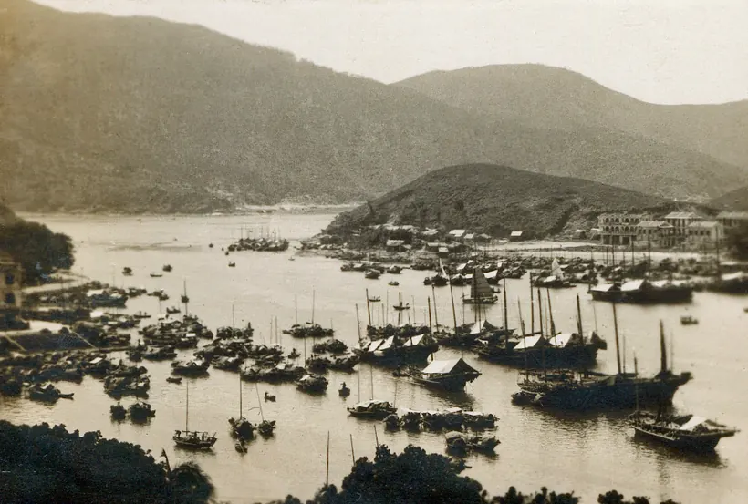

Chapter 11: 你考嘅 PVOC2 — 同上一級 PVOC1 之間隔住啲咩？

兩級制：簡單但精準
香港 Marine Department 將 Pleasure Vessel Operator Certificate 分成 2 級（唔係 3 級，唔好聽人亂講）。根據 Examination Rules for Pleasure Vessel Operator Certificate of Competency（2025 年 6 月版）Chapter 2：
- PVOC2：可以 take charge ≤15 米 LOA 嘅遊樂船，喺香港水域行
- PVOC1：可以 take charge 任何 size 嘅遊樂船，喺香港水域行
注意兩級嘅範圍其實都係「香港水域」— 想去公海唔係 grade 嘅問題，係 vessel licence + survey 嘅問題。Grade 之間嘅分別主要係船嘅大小，唔係「shelter water vs offshore」呢類民間說法。
PVOC1 點解難少少
PVOC1 唔係單純「more 嘅 PVOC2」，佢有幾條 hard rule：
- 必須先有 PVOC2（或 equivalent）
- PVOC2 拎到後，要再有 1 年「person in charge of a powered pleasure vessel」嘅實際操船經驗，由船東簽紙作實
- MD818 醫療 fitness 證明（2025 年 6 月起所有 grade 都要）
- Eyesight standards 同 PVOC2 一樣
- Navigation simulation assessment（如果冇做，certificate 上會寫 endorsement，限制你揸某類載客 commercial 船）
考嘅形式有兩條路，揀其中一條：
Path A — Marine Department 直接考： - Part A：「Practical Chart Work Examination (Navigation)」 筆試 1 小時 50 分鐘，pass mark 70% - Part B：「Seamanship」口試（同 MD examiner 對話） - 必須先 pass Part A 先入到 Part B - 報名 + 考試地點：Marine Department, 3/F Harbour Building, 38 Pier Road, Central
Path B — Hong Kong 帆船總會 (Sailing Federation of Hong Kong, China) 培訓： - 報認可培訓課程 - 4 小時實船 practical test（demonstrate 操船能力 + 答 syllabus 問題）
呢個就係好多人講「Grade 1 有 practical test」嘅來源 — 係 HKSF 嗰條路有 4 小時實船考。MD 嗰條路就係筆試 + 口試。兩條路 pass 都係出同一張 PVOC1。
PVOC2 留意嘅嘢
你而家考緊 PVOC2 — 比較少人知嘅 detail：
- PEAK 同 MD 都可以考：大部份人去 PEAK（多場次、$580/paper），但 MD 自己都有定期考，特別係申請 oral 形式（illiterate / 不諳英文書寫嘅 candidate）
- PVOC2 都有 HKSF 替代路徑：完成 HKSF 認可嘅 PVOC2 課程 + 通過課程 assessment，可以唔考 MD/PEAK 而直接攞牌（章程 3.1(d)）
- MD818 醫療 cert 由 2025 年 6 月 30 日起所有人都要
由故事學知識
🔑 你考緊 PVOC2：≤15m 船，HK 水域。 想升 PVOC1：要先有 PVOC2 + 1 年實戰，再揀 MD 筆+口路 / HKSF 4 小時實船路。
📚 Sources
- Marine Department, Examination Rules for Pleasure Vessel Operator Certificate of Competency (June 2025 Edition), Chapters 2, 3, 7. URL: https://www.mardep.gov.hk/filemanager/en/share/pub-services/pdf/examrules_ploc.pdf
- Image:
Hong Kong 1930s 06.jpg, Wikimedia Commons, Public Domain.